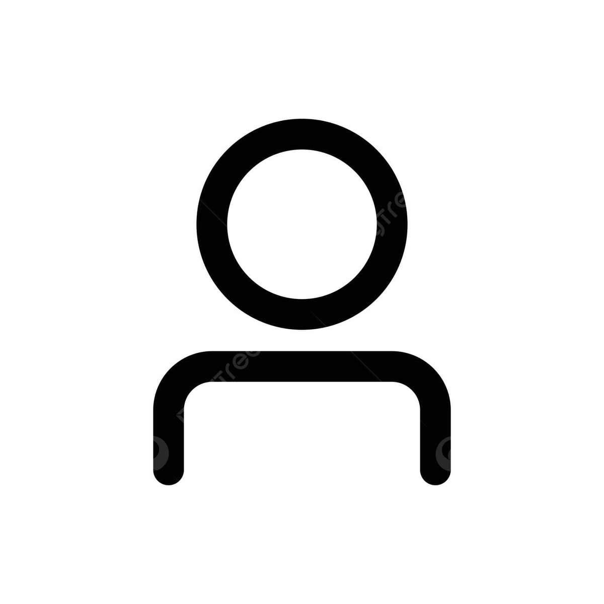

Présentation

GARCIA M'rick
Motivé, curieux et organisé. J'aime apprendre de nouvelles choses et améliorer mes compétences. Je sais travailler en équipe mais aussi être autonome quand il le faut. Mon objectif est de pouvoir avoir plus de connaissances et de compétences.
Avec un BTS en Services Informatiques aux Organisations, j'ai travaillé sur divers projets. Mon objectif est de créer des expériences utilisateur qui allient esthétique et fonctionnalité.
Compétences
HTML/CSS
JavaScript
Projets